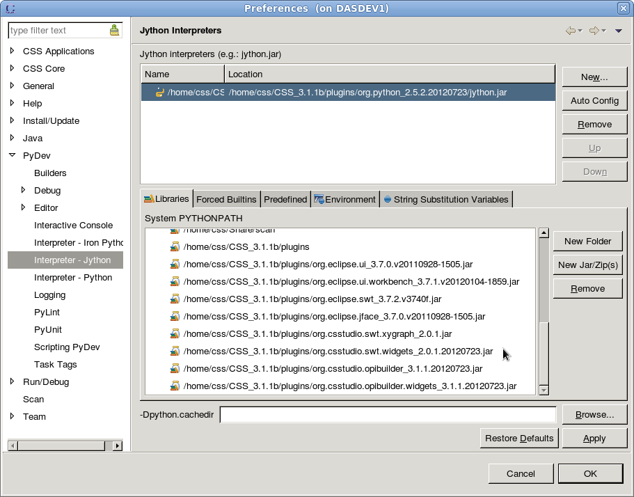

Python Script
BOY uses Jython, the Java implementation of Python under the hood.
So please follow the
Jython documentatoin for more details in calling Java code from Jython.
Since it is Jython, it follows the Python language grammar,
see
Python Tutorial. Most of standard Python modules are available from Jython,
but not all modules implemented in C for CPython are available because they need to be re-implemented in Java
for Jython. For example, SciPy, NumPy are not implemented for Jython yet.
Python module files search path
Unlike Javascript, Python script in BOY allows you to reuse other Python scripts as modules.
In BOY, the search path for module files includes the current path of the script file and the
path specified in PYTHONPATH preference which is configured in BOY preference page:
CSS->Preferences...->CSS Applications->Display->BOY->OPI Runtime. It accept
both workspace path and system path. Paths are separated by |. For example:
/MyPyLib/MyModule1|C:\Python27\Lib
If there was Python script executed before you make changes to this preference,
CSS must be restarted to make the new PYTHONPATH take effect. It is because the PYTHONPATH
preference is only loaded once during the first execution of any Python script in BOY.
Use PyDev
One of the good parts of using Python script in BOY is that you can take advantage of
the free Python development IDE PyDev. PyDev provided
a good Python script editor with
syntax hightlight and code auto-completion. If it is a pure Python code, you are even
able to debug/run the python script in the IDE.
PyDev is also a bunch of Eclipse Plugins, so they can be easily integrated to your CSS
by following these steps:
- Go to CSS menu
Help->Install New Software... to open the dialog as below.
In this dialog, click Add... button to add two update site locations(name can be arbitrary):
http://pydev.org/updateshttp://download.eclipse.org/eclipse/updates/3.7
Work with http://pydev.org/updates. Select the checkbox of
PyDev for Eclipse. Select the option Contact all update sites during install to find
required software.
Click Next and follow the instructions to finish the installation.

- Restart CSS.
- Go to
CSS->Preferences->PyDev->Interpreter-Jython and select New...
to add the jython interpreter jython.jar from <CSS_Installation>/plugin/org.python_<version>/.
In the next dialog, deselect all folders and click OK. If you see any warning, just ignore it and proceed anyway.
-
Select the button
New Jar/Zips in Libraries tab and add
org.csstudio.opibuilder.jar from your_CSS_path/plugins folder. Adding this jar file to
PYTHONPATH will give you the capability to make code auto-completion to
BOY ScriptUtil. You can also add other plugins if
you want to get code auto-completion to
other plugins, for example, add org.eclipse.jface.jar and org.eclipse.swt.jar
will give you the code auto-completion to SWT and JFace code. But this doesn't mean you can run/debug
its code directly from PyDev. The script is only executable as a BOY script.
Remember, only pure Java or Python code are able to run/debug from PyDev.

- In CSS Navigator view, right click the project which includes your python script files and
select
Properties->PyDev-Interpreter/Grammar. Choose project type as Jython. Click OK.
- Now you should be able to use PyDev in your CSS for Python script editing.